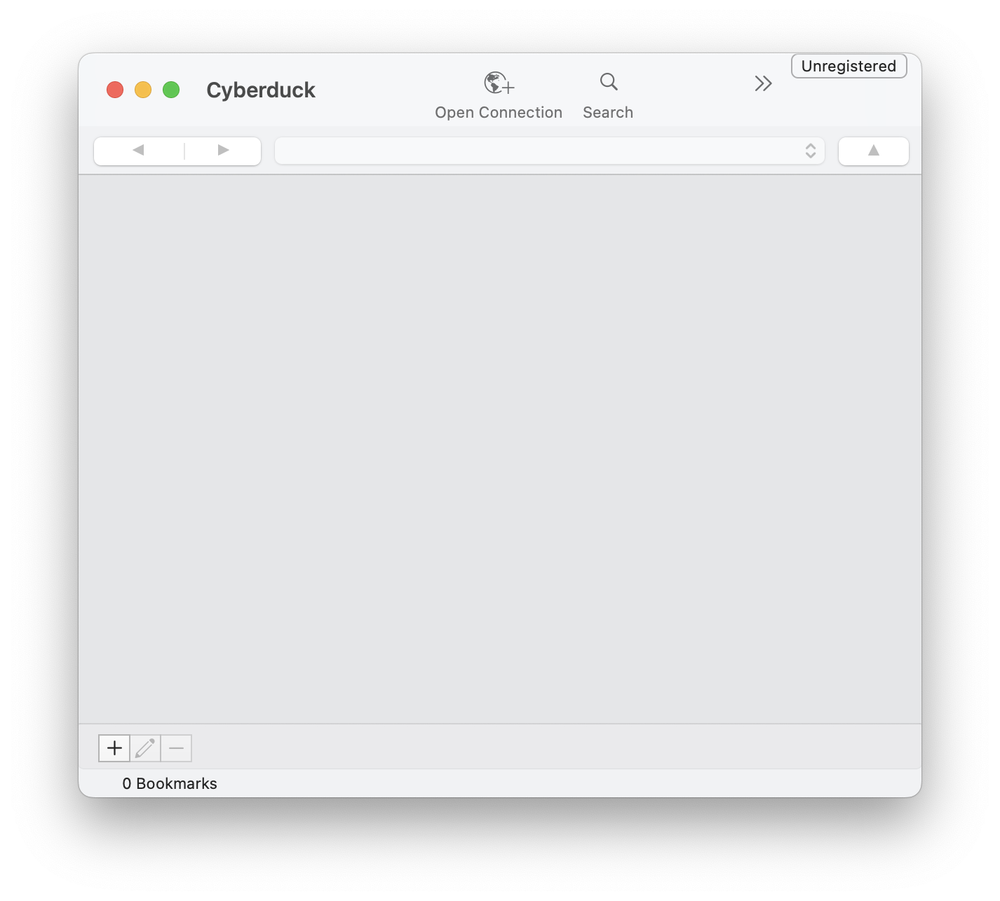
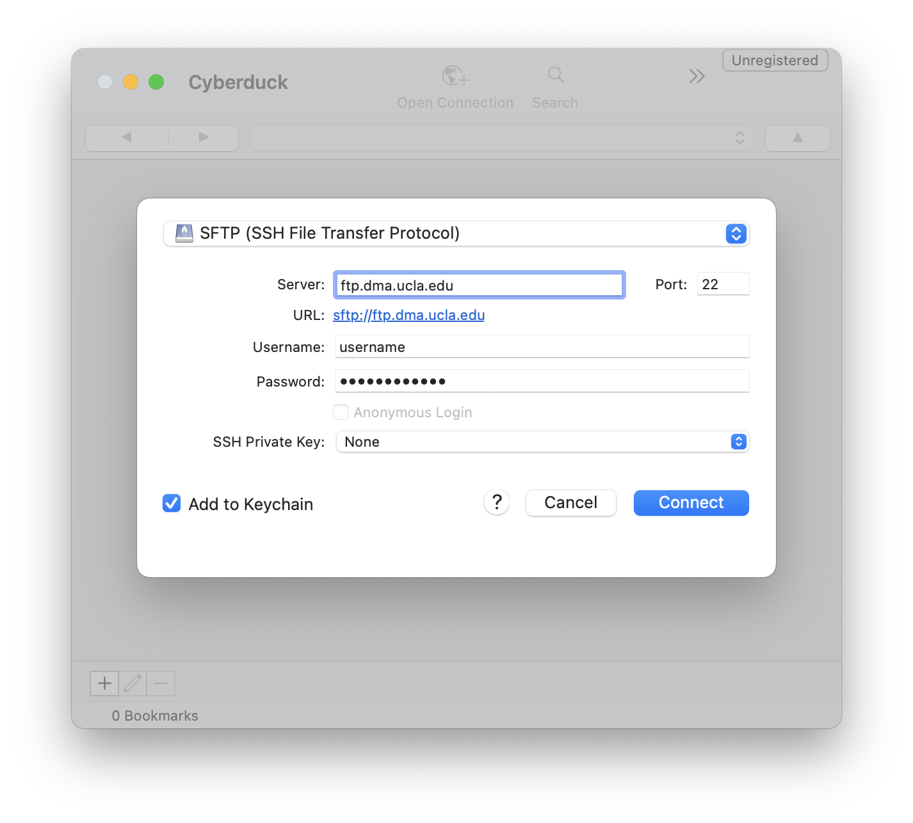
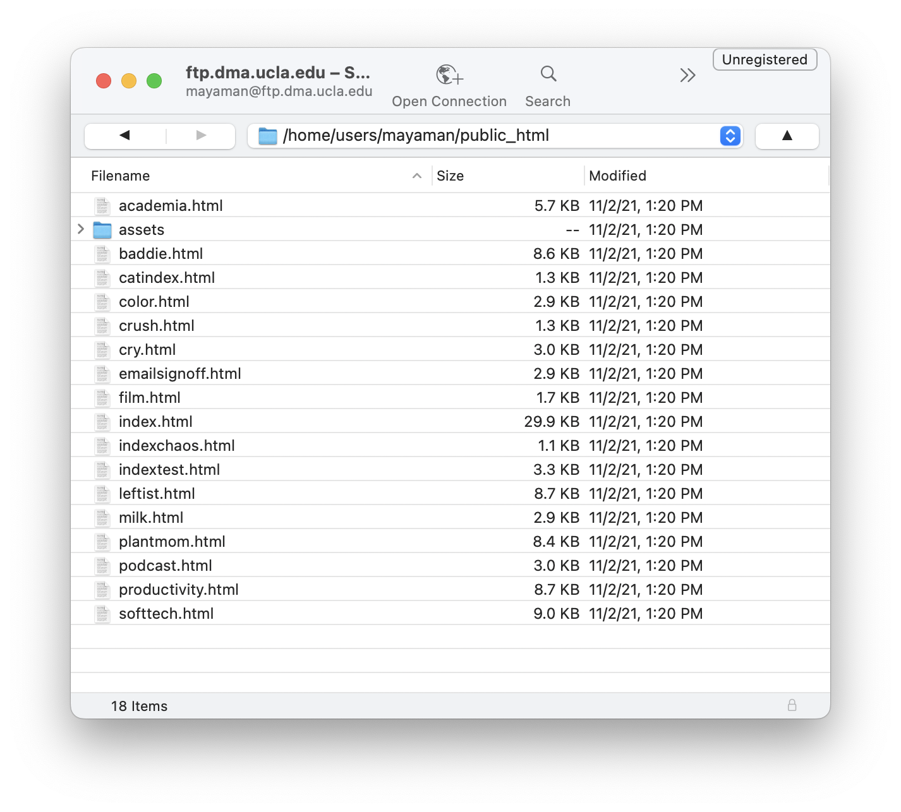
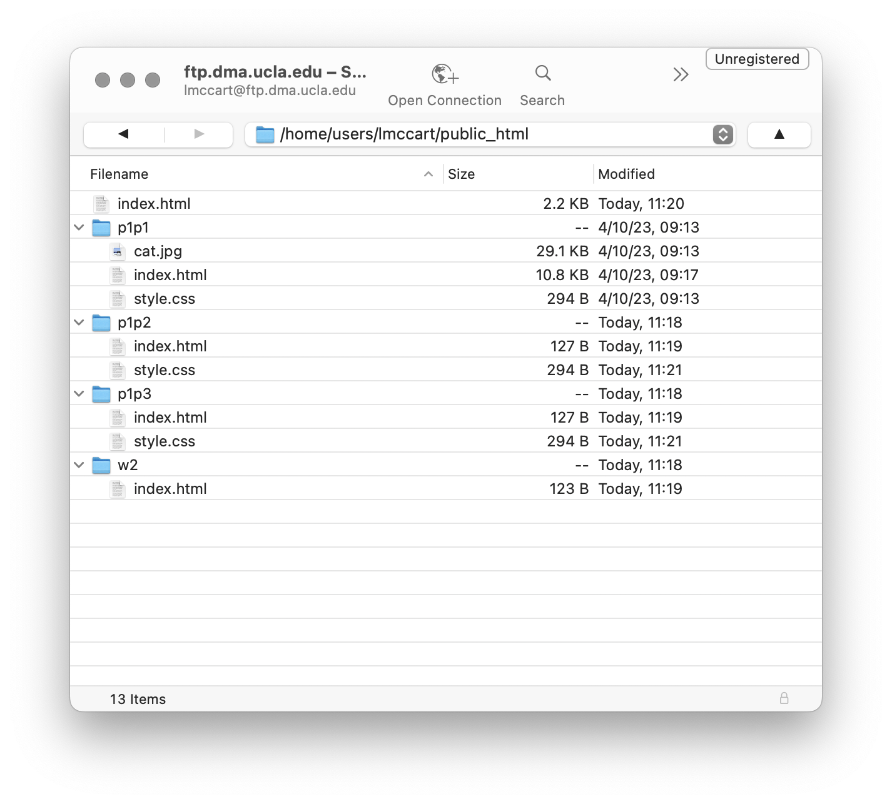
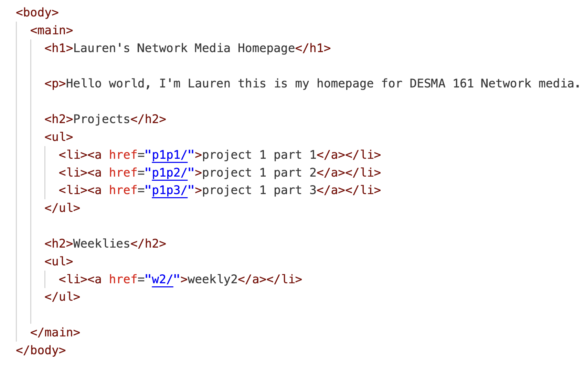

How to FTP
What is FTP and SFTP?
FTP stands for File Transfer Protocol. It is a standard network protocol used to transfer files between computers, generally between a client and server. An FTP client is a desktop application that lets you transfer files from your comuter to a remote server. It is most commonly used to upload files to a public web server for a website.
FTP pre-dates HTTP and was not developed to be a secure protocol and has many vulnerabilities. For this reason, we will be using SFTP. SFTP (SSH File Transfer Protocol, or Secure File Transfer Protocol) is a newer protocol designed by the Internet Engineering Task Force to provide secure file transferring between known clients and hosts.
CONNECTING WITH CYBERDUCK
- Click the Open Connection icon near the top of the window.
- In the dialogue box, choose SFTP (SSH File Transfer Protocol). DO NOT CHOOSE FTP.
- For server name, enter
ftp.dma.ucla.eduand default port22. - Enter your username and DMA support password.
- The first time you do this, you can select to add to keychain (if you're on your personal computer).

Transferrable Files
- Your files are located inside
public_html - You can drag and drop files inside here to upload to the server or click on the Action menu and choose Upload. You can also choose to rename files, duplicate, delete, etc.
- Your files are located at
http://users.dma.ucla.edu/~.yourusername

Other FTP Applications
- FileZilla - Mac, Windows, Linux
- SFTP is also pre-installed on OS X's Terminal, accesible via
sftp yourusername@ftp.dma.ucla.edu
Basic Info Required
To connect via a FTP connection you need to know:
- Server name
ftp.dma.ucla.eduand the default port:22
- Username (your UCLA ID)
- Password (your DMA_Support password)
Your Personal Webspace
The public_html folder in your home directory is the root directory of your web space, and where
you may create your personal website. It has been pre-configured with the correct permissions to allow file
placed inside to be accessed online. A file called foo.html in that directory will be available
online as:
http://users.dma.ucla.edu/~
The special file index.html or index.php is what is brought up automatically if you
do not specify a filename at the end of your URL (eg:
http://users.design.ucla.edu/~ ).
PLEASE NOTE: if you do not have an index.html file and type the URL without a filename at the end, you will get an error message (access forbidden). This is for your own protection, as it prevents people from browsing through your directory when you are not ready for them to do so.
NOTE 1: Permissions File permissions matter. All files in the public_html directory should be world-readable in order to ensure their availability online. Similarly, all directories should be world readable and executable. Most clients will deposit the files in the correct manner, but there have been some reports that moving whole folders from other parts of your home directory to your web area may mess up permissions depending on your client.
NOTE 2: CAPITALIZATION MATTERS! That is to say, index.html and iNdex.html are NOT
the same files. In order for your site to work properly, you must make sure that both the filenames and the
HTML that refers to the filename use the same casing. Since many operating systems by default hide or pretty
the actual cases of their filenames, I recommend either turning off those features (if you know how) or use an
SFTP client that shows you how the files actually look when uploaded.
[ Info in this section comes from DMA Support ]
Suggested File Structure
It is helpful to put each weekly or project part into it's own file on your local machine and on cyberduck. The file structure should mirror each other. Here's how it would look in cyberduck.
And here's how you would link to each page from your code. To figure out the path, you start with your homepage, all paths are relative to this. In this case, each folder is one level down from the homepage, so you tell the html code to go into a folder for each project or weekly. The "/" at the end of each path indicates this. By default the index.html file is displayed for each folder. If you have a different filename besides index.html, you would specify that after the "/".
